ภาพรวมการทำงาน
ระบบจะเก็บยอดตามระบบ (ERP) ไว้ตอนเริ่มนับ เทียบกับยอดที่นับได้จริง สรุปรายการ ตรงกัน / ขาด / เกิน ให้ แล้วผู้ตรวจสอบส่งเฉพาะรายการที่ต้องปรับไปขออนุมัติ เมื่ออนุมัติครบ 3 ขั้นตอน ระบบจึงจะ ปรับยอดสต๊อกจริง
เข้าสู่เมนูและหน้ารายการ
เปิดเมนู คลังวัสดุและสินค้า › ตรวจนับสต๊อก › เอกสารตรวจนับสต๊อก (หรือการ์ด ตรวจนับสต๊อก ในหน้า Home ที่บอกจำนวนเอกสารกำลังนับ / รอตรวจสอบ)
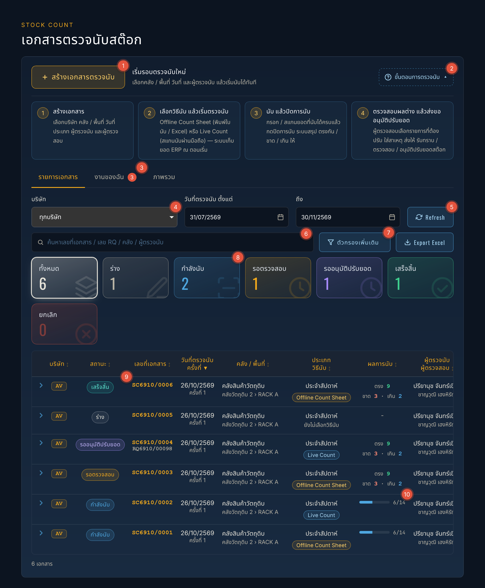
- 1+ สร้างเอกสารตรวจนับ: เริ่มรอบตรวจนับใหม่ (ดูหัวข้อ 03)
- 2ขั้นตอนการตรวจนับ: เปิด / ปิดกล่องสรุป 4 ขั้นตอน
- 3งานของฉัน: เอกสารที่รอคุณดำเนินการ (เช่น คุณเป็นผู้ตรวจนับหรือผู้ตรวจสอบ) ตัวเลขสีแดงคือจำนวนใบ · แท็บ รายการเอกสาร = ทุกใบ · ภาพรวม ดูหัวข้อ 09
- 4บริษัท / วันที่ตรวจนับ: เลือกแล้วรายการโหลดใหม่เอง
- 5Refresh ดึงข้อมูลล่าสุดจากระบบ
- 6ค้นหา เลขที่เอกสาร / เลข RQ / คลัง / ผู้ตรวจนับ
- 7ตัวกรองเพิ่มเติม (คลังหลัก / ประเภทการตรวจนับ / วิธีนับ) และ Export Excel ส่งออกรายการตามตัวกรอง
- 8การ์ดสถานะ (ร่าง / กำลังนับ / รอตรวจสอบ / รออนุมัติปรับยอด / เสร็จสิ้น / ยกเลิก) กดเพื่อกรองรายการ
- 9แถวเอกสาร: ลูกศร › หน้าแถวขยายดูรายละเอียด กดที่แถวเพื่อเปิดเอกสาร · ป้ายสถานะดูความหมายในหัวข้อ 11
- 10ผลการนับ: กำลังนับแสดงแถบความคืบหน้า (นับแล้ว / ทั้งหมด) ปิดการนับแล้วแสดงจำนวน ตรง / ขาด / เกิน
สร้างเอกสารตรวจนับ
กด + สร้างเอกสารตรวจนับ แล้วกรอกข้อมูล
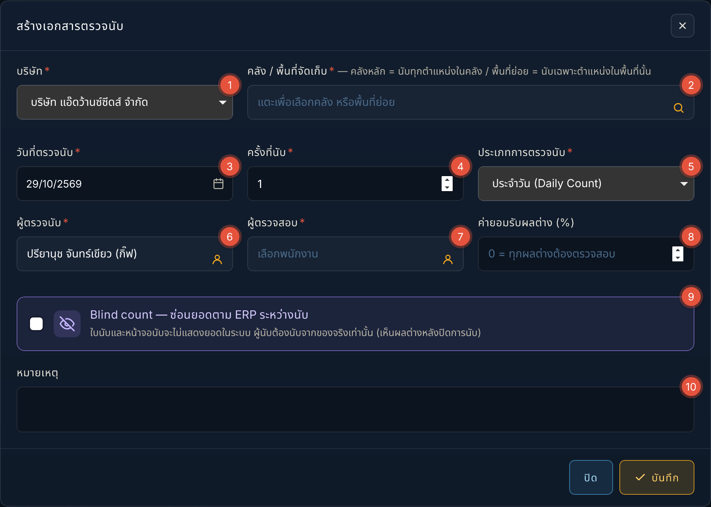
- 1บริษัท ที่จะตรวจนับ
- 2คลัง / พื้นที่จัดเก็บ: กดเลือก — คลังหลัก = นับทุกตำแหน่งในคลัง · พื้นที่ย่อย (เช่น RACK A) = นับเฉพาะตำแหน่งในพื้นที่นั้น หน้าต่างเลือกคลังบอกระดับการตรวจนับของแต่ละคลังด้วย (ดูภาพด้านล่าง)
- 3วันที่ตรวจนับ
- 4ครั้งที่นับ: ระบบเสนอให้ ถ้าวันเดียวกันนับคลังเดิมซ้ำ = ครั้งที่ 2
- 5ประเภทการตรวจนับ เช่น ประจำวัน / ประจำสัปดาห์ / ประจำเดือน / เฉพาะรายการ
- 6ผู้ตรวจนับ (คนนับ)
- 7ผู้ตรวจสอบ (คนตรวจผลต่างและส่งขออนุมัติ)
- 8ค่ายอมรับผลต่าง (%): ผลต่างไม่เกินค่านี้ ระบบตั้งเป็น "ไม่ต้องปรับ" ให้ (ผู้ตรวจสอบเปลี่ยนได้) ใส่ 0 = ทุกผลต่างต้องตรวจสอบ
- 9Blind count: ซ่อนยอดในระบบระหว่างนับ ผู้นับต้องนับจากของจริงเท่านั้น (เห็นผลต่างหลังปิดการนับ) เหมาะกับการนับตรวจสอบ
- 10หมายเหตุ (ไม่บังคับ) แล้วกด บันทึก
หน้าต่างเลือกคลัง / พื้นที่จัดเก็บ แต่ละแถวคือคลังหนึ่งแห่ง เยื้องเข้าตามชั้น และบอกว่า "อยู่ใน" คลังไหน:
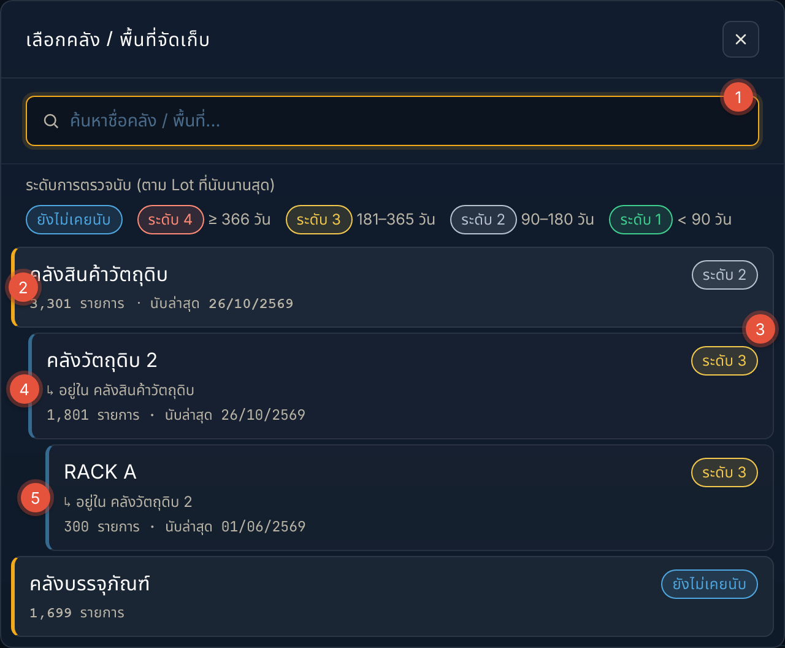
- 1ค้นหา ชื่อคลัง / พื้นที่ (ค้นแล้วแสดงชื่อเต็มทั้งเส้นทาง)
- 2คลังหลัก: แถบสีส้มด้านซ้าย — เลือกแล้วนับทุกตำแหน่งในคลัง
- 3ป้ายระดับการตรวจนับ: อยู่มุมขวาบนของทุกแถวเสมอ (ยังไม่เคยนับ / ระดับ 1–4)
- 4↳ อยู่ใน …: บอกว่าพื้นที่นี้เป็นลูกของคลังไหน
- 5พื้นที่ย่อย: เยื้องเข้าตามชั้น มีเส้นสีฟ้านำด้านซ้าย เลือกแล้วนับเฉพาะพื้นที่นั้น
เลือกวิธีนับ แล้วเริ่มตรวจนับ
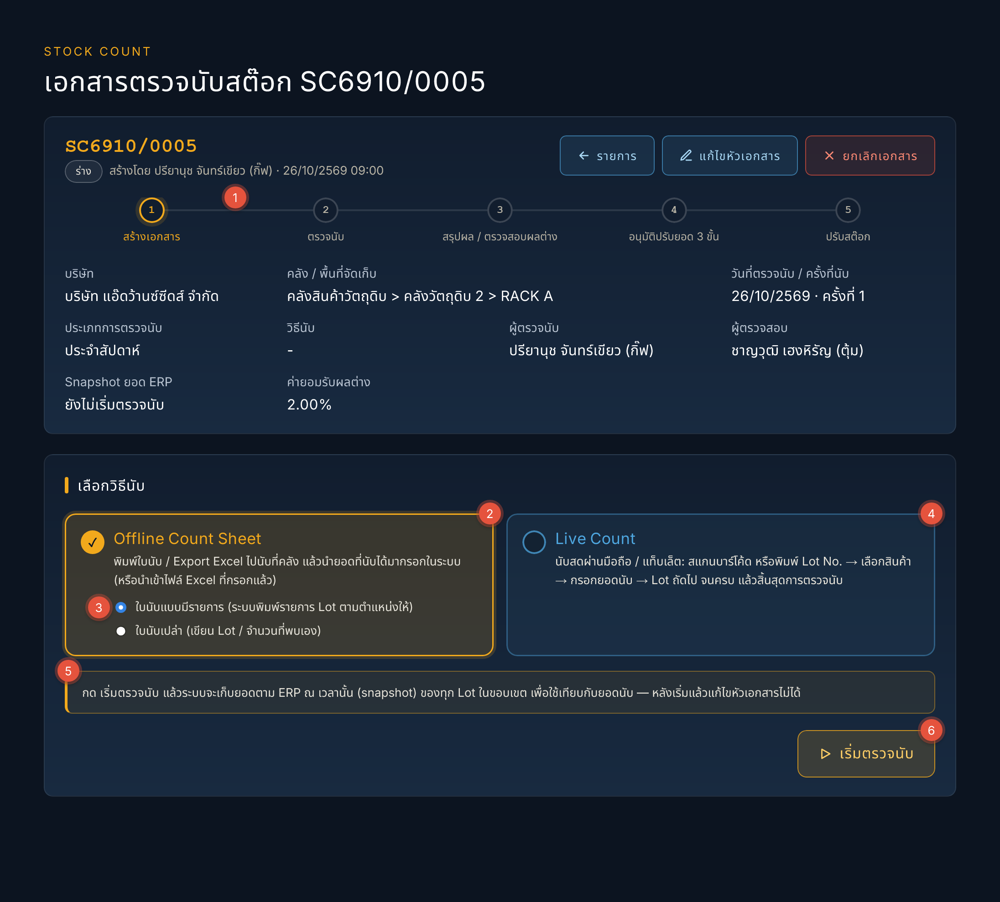
- 1แถบขั้นตอน: วงสีส้มคือขั้นที่เอกสารอยู่ตอนนี้
- 2Offline Count Sheet: พิมพ์ใบนับ / Export Excel ไปนับที่คลัง แล้วกรอกยอดในระบบ
- 3ชนิดใบนับ: แบบมีรายการ (ระบบพิมพ์รายการ Lot ตามตำแหน่งให้) หรือแบบเปล่า (เขียน Lot / จำนวนที่พบเอง)
- 4Live Count: นับสดผ่านมือถือ / แท็บเล็ต
- 5คำเตือน snapshot: กดเริ่มแล้วระบบเก็บยอด ERP ณ ตอนนั้น และแก้หัวเอกสารไม่ได้อีก
- 6เริ่มตรวจนับ
| วิธีนับ | เหมาะกับ | ทำงานอย่างไร |
|---|---|---|
| Offline Count Sheet ใบนับแบบมีรายการ | คลังที่รู้ตำแหน่งแน่นอน นับเป็นทีม | พิมพ์ใบนับที่มีรายการ Lot ตามตำแหน่ง (หรือ Export Excel) ไปนับ แล้วกรอกยอดในระบบ หรือนำเข้า Excel ที่กรอกแล้ว |
| Offline Count Sheet ใบนับเปล่า | ของกระจาย / ไม่แน่ใจตำแหน่ง | พิมพ์ใบเปล่า ผู้นับเขียน Lot / จำนวนที่พบเอง แล้วนำเข้าไฟล์ ระบบจับคู่ Lot ให้ |
| Live Count | นับทีละตำแหน่งด้วยมือถือ / แท็บเล็ต | สแกนบาร์โค้ด หรือพิมพ์ Lot No. → เลือกสินค้า → กรอกยอด → Lot ถัดไป ยอดบันทึกทันที |
นับด้วยใบนับ (Offline Count Sheet)
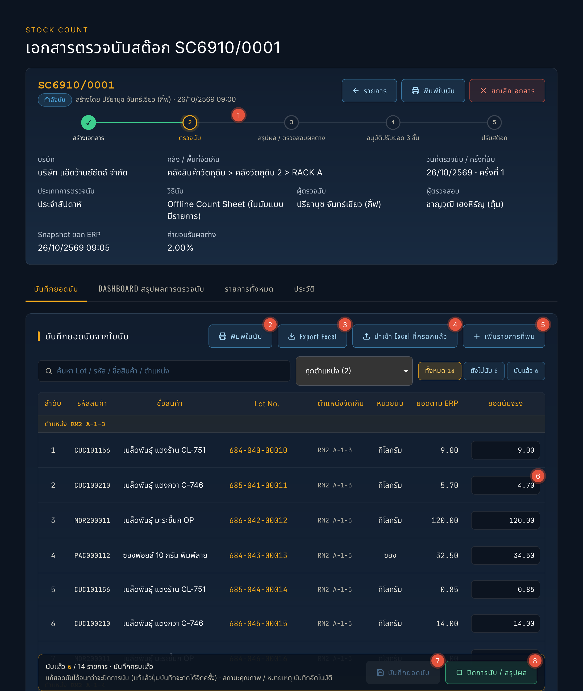
- 1แถบขั้นตอน อยู่ที่ขั้น 2 ตรวจนับ
- 2พิมพ์ใบนับ ใบ A4 มีหัวเอกสารและช่องลงนาม ไปนับที่คลัง
- 3Export Excel ส่งออกรายการไปกรอกยอดนอกระบบ
- 4นำเข้า Excel ที่กรอกแล้ว: ระบบอ่านยอดที่เปลี่ยนจากเดิม แสดงเป็นช่องสีส้มให้ตรวจก่อนกดบันทึก (นำเข้าไฟล์เดิมซ้ำได้ ยอดไม่เบิ้ล)
- 5+ เพิ่มรายการที่พบ เจอของที่ไม่อยู่ในรายการ: ถ้าเป็น Lot ในระบบ ระบบเพิ่มเป็นรายการนอกขอบเขต ถ้าไม่พบในระบบ บันทึกเป็น "รายการไม่พบในระบบ" ให้ผู้ตรวจสอบจัดการ
- 6ยอดนับจริง: กรอกยอดที่นับได้ (คอลัมน์ถัดไปทางขวาคือสถานะคุณภาพ / วันหมดอายุ / หมายเหตุ)
- 7บันทึกยอดนับ: ระหว่างนับบันทึกหลายครั้งได้ ปุ่มสีเทา = ยังไม่มียอดที่แก้ไข
- 8ปิดการนับ / สรุปผล เมื่อนับครบ (แถบด้านล่างบอกว่านับแล้วกี่รายการ)
ปุ่มด้านล่างจอบอกว่า นับแล้วกี่รายการ และมีปุ่ม ปิดการนับ / สรุปผล เมื่อนับครบ
นับสดด้วยมือถือ (Live Count)
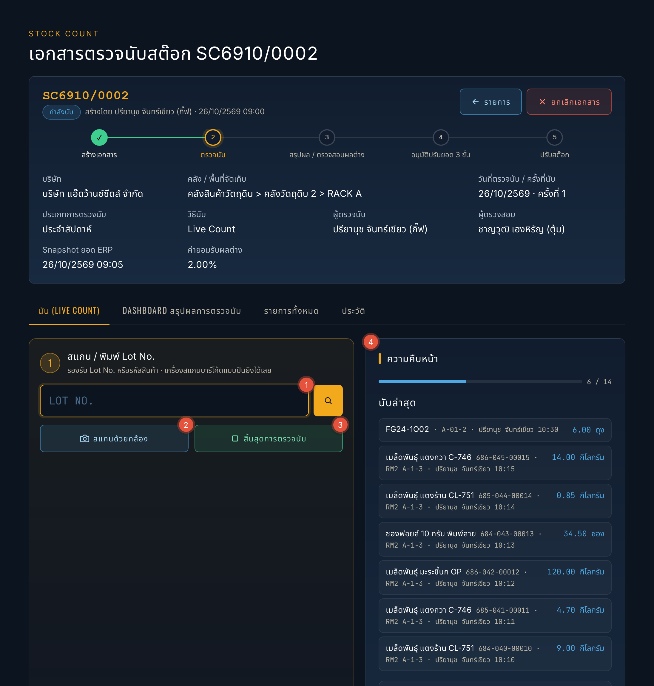
- 1ช่องสแกน / พิมพ์ Lot No.: ยิงบาร์โค้ดด้วยเครื่องสแกน หรือพิมพ์ Lot No. / รหัสสินค้า แล้วกดค้นหา → เลือกรายการที่ตรง → กรอกยอดนับและสถานะคุณภาพ → บันทึก (ยอดเข้าระบบทันที) → Lot ถัดไป · ไม่พบในเอกสาร: ระบบหา Lot นอกขอบเขตให้ หรือบันทึกเป็นรายการไม่พบในระบบ
- 2สแกนด้วยกล้อง ใช้กล้องมือถือสแกนบาร์โค้ด
- 3สิ้นสุดการตรวจนับ เมื่อนับครบ ไปขั้นปิดการนับ
- 4ความคืบหน้า และ นับล่าสุด: ตรวจย้อนได้ว่าใครนับอะไรเวลาไหน
ปิดการนับ / สรุปผล
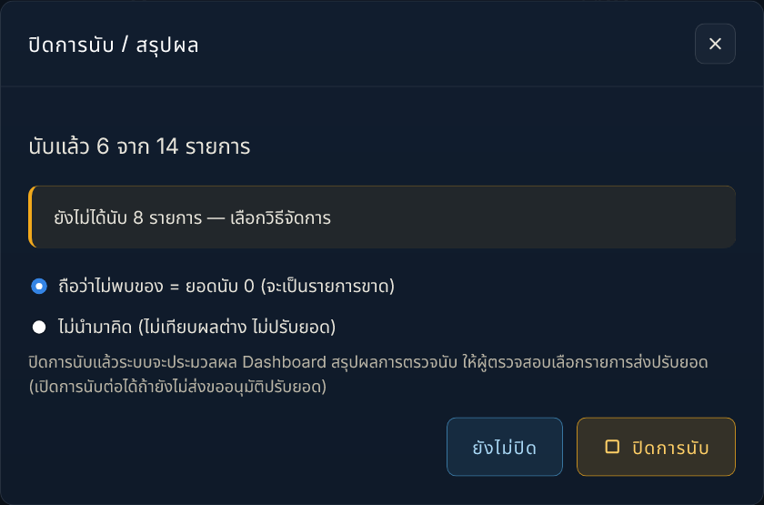
ถ้ายังมีรายการที่ไม่ได้นับ ต้องเลือกวิธีจัดการ:
- 1ถือว่าไม่พบของ = ยอดนับ 0 (ค่าเริ่มต้น): รายการที่ไม่ได้นับกลายเป็นรายการขาดทั้งหมด — ใช้เมื่อนับครบพื้นที่แล้วจริง ๆ
- 2ไม่นำมาคิด: ไม่เทียบผลต่าง ไม่ปรับยอด — ใช้เมื่อยังไม่ได้นับบางส่วนด้วยเหตุผลอื่น (เช่น เข้าไม่ถึงของ)
- 3ปิดการนับ (หรือ ยังไม่ปิด เพื่อกลับไปนับต่อ)
ปิดแล้วระบบสรุป Dashboard สรุปผลการตรวจนับ ให้ และเอกสารไปรอผู้ตรวจสอบ ถ้าปิดเร็วไป ผู้ตรวจสอบกด เปิดการนับต่อ ได้
ตรวจสอบผลต่าง และส่งขออนุมัติปรับยอด (ผู้ตรวจสอบ)
ส่วนนี้สำหรับผู้มีสิทธิ์ ตรวจสอบผลต่างและส่งขออนุมัติปรับยอด เปิดเอกสารสถานะ รอตรวจสอบ (จากแท็บงานของฉัน หรือการ์ดรอตรวจสอบ)
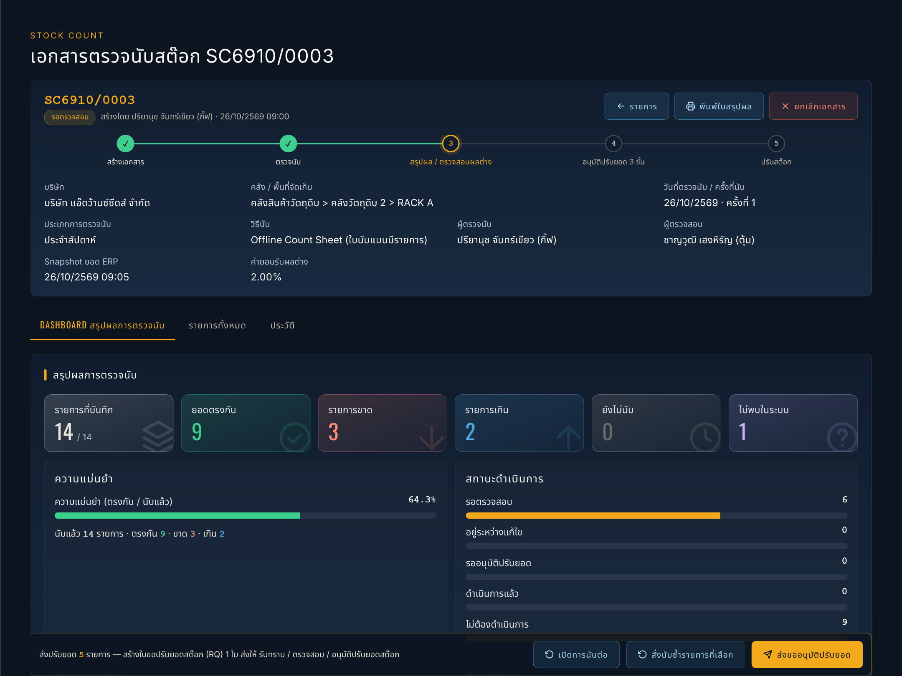
- 1แถบขั้นตอน อยู่ที่ขั้น 3 สรุปผล / ตรวจสอบผลต่าง
- 2การ์ดสรุปผล: รายการที่บันทึก / ยอดตรงกัน / ขาด / เกิน / ยังไม่นับ
- 3ไม่พบในระบบ: สิ่งที่เจอแต่ไม่มีในระบบ ต้องจัดการให้ครบก่อนส่งขออนุมัติ
- 4ความแม่นยำ = ตรงกัน ÷ รายการที่นับ
- 5เปิดการนับต่อ ถ้าปิดเร็วไป
- 6สั่งนับซ้ำรายการที่เลือก ติ๊กช่องนับซ้ำในตารางก่อน
- 7ส่งขออนุมัติปรับยอด
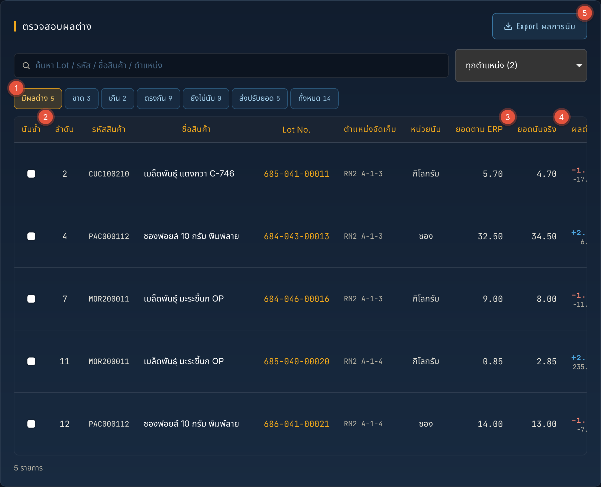
- 1ปุ่มกรอง: มีผลต่าง / ขาด / เกิน / ตรงกัน / ยังไม่นับ / ส่งปรับยอด / ทั้งหมด
- 2นับซ้ำ: ติ๊กรายการที่ต้องการให้นับใหม่
- 3ยอดตาม ERP: ยอด ณ ตอนกดเริ่มนับ (snapshot)
- 4ยอดนับจริง: ยอดที่นับได้
- 5Export ผลการนับ ส่งออกเป็น Excel
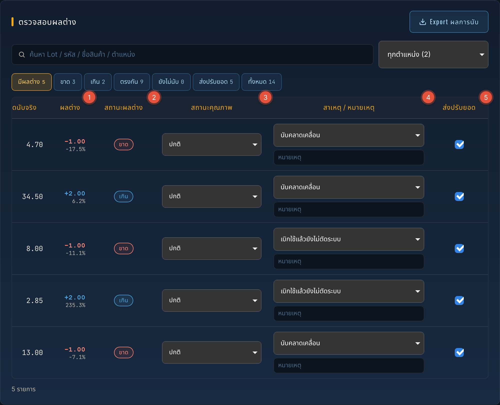
- 1ผลต่าง: จำนวนที่ต่าง (− = ขาด / + = เกิน) และเปอร์เซ็นต์ของยอดในระบบ
- 2สถานะผลต่าง: ขาด / เกิน / ตรงกัน
- 3สถานะคุณภาพ: ปกติ / รอตรวจสอบคุณภาพ / Hold / Reject
- 4สาเหตุ / หมายเหตุ: เลือกสาเหตุ (จำเป็นสำหรับรายการที่ส่งปรับยอด) และพิมพ์หมายเหตุเพิ่มได้
- 5ส่งปรับยอด: ติ๊ก = ส่งขออนุมัติ ระบบติ๊กให้รายการที่ต่างเกินค่ายอมรับ เอาออกได้ถ้าไม่ต้องการปรับ
- ดูรายการผลต่าง (ปุ่มกรอง มีผลต่าง / ขาด / เกิน / ส่งปรับยอด) ระบบติ๊กส่งปรับยอดให้ทุกรายการที่ต่างเกินค่ายอมรับ เอาออกได้ถ้าไม่ต้องการปรับ
- ระบุ สาเหตุ ของทุกรายการที่ส่งปรับยอด (จำเป็น) เช่น นับคลาดเคลื่อน / บันทึกรับ-จ่ายในระบบผิด / เบิกใช้แล้วยังไม่ตัดระบบ
- สงสัยยอด: ติ๊กช่อง นับซ้ำ แล้วกด สั่งนับซ้ำรายการที่เลือก เอกสารกลับไปสถานะกำลังนับเฉพาะรายการนั้น
- รายการไม่พบในระบบ ต้องจัดการให้ครบก่อนส่ง: จับคู่ กับรายการในเอกสาร (ยอดบวกเข้ารายการนั้น — เลือกจากการ์ดที่แยก Lot No. / ชื่อสินค้า / รหัส / หน่วย / คลัง ชัดเจน และมีช่องค้นหาเมื่อมีหลายรายการ) / ส่งตั้งรหัสใหม่ / ทิ้งรายการ
- กด ส่งขออนุมัติปรับยอด: ระบบสร้างใบขอปรับยอดสต๊อก (RQ) 1 ใบ จากรายการที่ส่งปรับ — ถ้าไม่มีรายการต้องปรับ ปุ่มเป็น ปิดเอกสาร (ไม่มีรายการปรับ) และเอกสารเป็น เสร็จสิ้น
หลังส่ง ติดตามได้ในเอกสาร (กล่องใบขอปรับยอด แสดงขั้นที่ผ่านแล้ว มีปุ่ม ดูใบขอปรับยอดสต๊อก และ ส่งลิงก์ตามอนุมัติ) ถ้าผู้อนุมัติส่งกลับแก้ไข เอกสารกลับมาสถานะรอตรวจสอบ พร้อมเหตุผล แก้แล้วส่งใหม่ได้
ภาพรวม และระดับการตรวจนับ
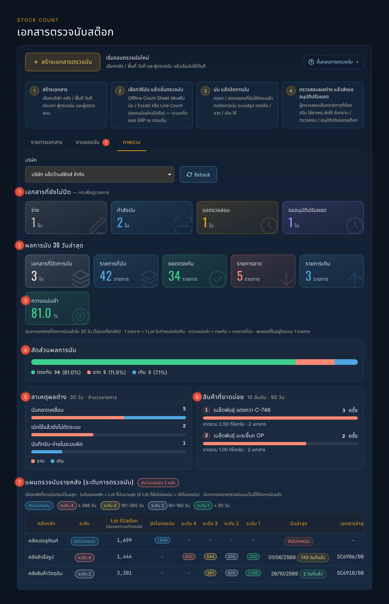
- 1เอกสารที่ยังไม่ปิด: ร่าง / กำลังนับ / รอตรวจสอบ / รออนุมัติปรับยอด กดการ์ดเพื่อดูรายการ
- 2ผลการนับ 30 วันล่าสุด: เอกสารที่ปิดการนับ รายการที่นับ ตรงกัน ขาด เกิน
- 3ความแม่นยำ = ตรงกัน ÷ รายการที่นับ
- 4สัดส่วนผลการนับ: ตรงกัน / ขาด / เกิน
- 5สาเหตุผลต่าง: ใช้หาต้นเหตุที่ต้องแก้ เช่น การตัดเบิกในระบบไม่ทัน
- 6สินค้าที่ขาดบ่อย 10 อันดับ (90 วัน)
- 7แผนตรวจนับรายคลัง: เรียงคลังที่ควรนับก่อน ตาม ระดับการตรวจนับ (อายุนับจากครั้งล่าสุดที่นับบนเว็บ): ยังไม่เคยนับ ระดับ 1 < 90 วัน ระดับ 2 90–180 วัน ระดับ 3 181–365 วัน ระดับ 4 ≥ 366 วัน
ใบสรุปผล พิมพ์ และยกเลิกเอกสาร
- พิมพ์ใบสรุปผล (หลังปิดการนับ): ใบสรุปผลการตรวจนับ A4 พร้อมช่องลงนามผู้ตรวจนับและผู้ตรวจสอบ (มีลายเซ็นอิเล็กทรอนิกส์ให้ถ้ามีในระบบ)
- Export ผลการนับ: ส่งออกรายการผลต่างเป็น Excel
- ยกเลิกเอกสาร (ผู้มีสิทธิ์ยกเลิก): ทำได้ทุกสถานะก่อนปรับสต๊อก ต้องระบุเหตุผล ถ้ามีใบขอปรับยอดค้าง ระบบยกเลิกให้ด้วย (ปลดล็อก Lot)
- แท็บ ประวัติ: บันทึกทุกการทำงาน ใคร ทำอะไร เมื่อไร
ความหมายของสถานะ
| สถานะ | ความหมาย | ใครทำอะไรต่อ |
|---|---|---|
| ร่าง | สร้างเอกสารแล้ว ยังไม่เริ่มนับ | ผู้ตรวจนับเลือกวิธีนับแล้วเริ่มตรวจนับ / แก้หัวเอกสาร |
| กำลังนับ | เก็บยอด ERP แล้ว กำลังบันทึกยอดนับ | ผู้ตรวจนับนับให้ครบแล้วปิดการนับ |
| รอตรวจสอบ | ปิดการนับแล้ว รอตรวจสอบผลต่าง | ผู้ตรวจสอบ: ส่งขออนุมัติ / สั่งนับซ้ำ / เปิดการนับต่อ |
| รออนุมัติปรับยอด | ส่งใบขอปรับยอด (RQ) แล้ว Lot ถูกล็อก | ผู้รับทราบ / ผู้ตรวจสอบ / ผู้อนุมัติ |
| ปรับสต๊อกแล้ว | อนุมัติครบ 3 ขั้น ระบบปรับยอดและลง Stock Card แล้ว | ดูผลในรายงานการปรับยอดสต๊อก |
| เสร็จสิ้น | ปิดเอกสาร ไม่มีรายการต้องปรับ | - |
| ยกเลิก | ยกเลิกเอกสาร (เก็บประวัติไว้ ไม่ถูกลบ) | - |
คำถามที่พบบ่อยและการแก้ปัญหา
ใช้งานบนมือถือ (iPhone / Android) ได้ไหม และหน้าตาต่างจากคอมอย่างไร
ใช้ได้ทุกเมนูของการตรวจนับ — หน้าจอแคบรายการจะเปลี่ยนจากตารางเป็นการ์ด แต่ละการ์ดมีปุ่ม ☰ รายละเอียด กดเพื่อเปิดเอกสาร หน้านับสด (Live Count) ปุ่มและช่องกรอกขยายให้กดง่าย ฟอร์มสร้างเอกสารเรียงทีละช่อง (วันที่ตรวจนับ กับ ครั้งที่นับ อยู่คู่กัน) การพิมพ์ใบสรุปผล / รายงานจาก iPhone จะออกเป็นแนวตั้ง
เริ่มนับแล้ว อยากเปลี่ยนคลัง / วันที่ / ผู้ตรวจนับ
หลังเริ่มตรวจนับแก้หัวเอกสารไม่ได้ (ยอด ERP ถูกเก็บตามขอบเขตเดิมแล้ว) ให้ยกเลิกเอกสาร แล้วสร้างใหม่
ระหว่างนับมีการเบิก / รับของในพื้นที่ที่นับ
ยอดเทียบใช้ยอด ERP ตอนกดเริ่มนับ ถ้ามีการเบิก-รับหลังจากนั้น ผลต่างจะเพี้ยน ควรหยุดเคลื่อนไหวในพื้นที่ระหว่างนับ ถ้าเกิดขึ้นแล้ว ผู้ตรวจสอบเอารายการนั้นออกจากการส่งปรับยอด หรือสั่งนับซ้ำ ตอนส่งขออนุมัติ ระบบใช้ยอดคงเหลือปัจจุบันเป็นยอดก่อนปรับ
ไม่เห็นยอดในระบบระหว่างนับ
เอกสารตั้งเป็น Blind count หรือใช้ใบนับเปล่า ผู้นับจะไม่เห็นยอด ERP จนปิดการนับ (ผู้มีสิทธิ์ตรวจสอบผลต่างยังเห็น)
ส่งขออนุมัติไม่ได้ ขึ้นว่ายังขาดสาเหตุ หรือมีรายการไม่พบในระบบ
ทุกรายการที่ติ๊กส่งปรับยอดต้องมีสาเหตุ และรายการไม่พบในระบบต้องจัดการครบ (จับคู่ / ส่งตั้งรหัสใหม่ / ทิ้ง) ก่อนส่ง
ใบขอปรับยอดถูกส่งกลับแก้ไข
เอกสารกลับมาสถานะรอตรวจสอบ เหตุผลอยู่ในแท็บประวัติและกล่องแจ้งด้านบน แก้ตามเหตุผล (เช่น สั่งนับซ้ำ / แก้สาเหตุ) แล้วส่งขออนุมัติใหม่ ระบบออกใบขอปรับยอดใบใหม่
ระดับการตรวจนับของคลังไม่ตรงกับที่เคยนับใน WIM Desktop
ระดับการตรวจนับนับเฉพาะการตรวจนับบนเว็บ (ไม่รวมประวัติจาก WIM Desktop) ช่วงแรกคลังส่วนใหญ่จึงเป็น "ยังไม่เคยนับ"